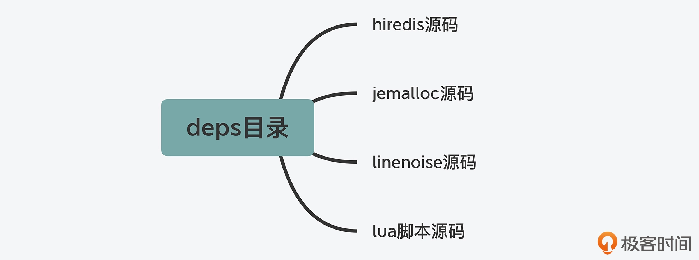
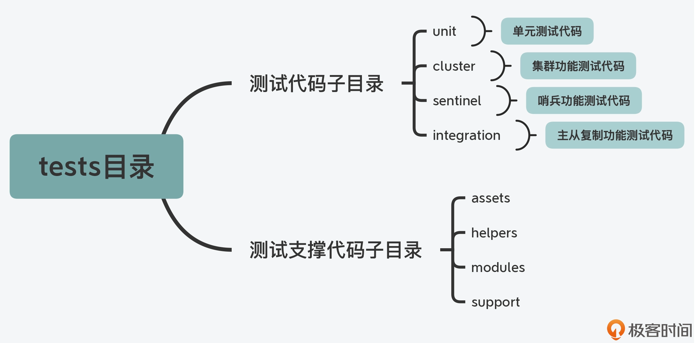
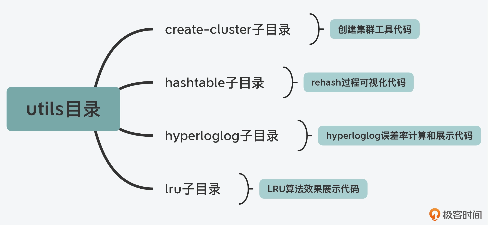
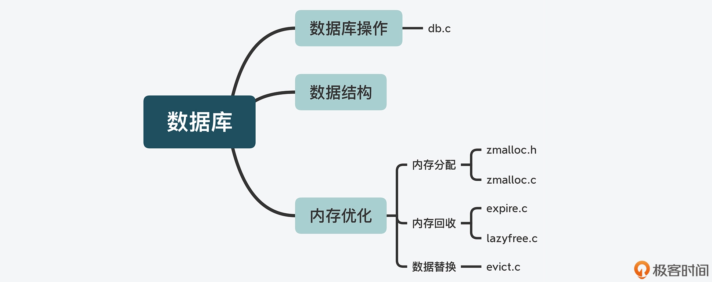

- 00 开篇词 阅读Redis源码能给你带来什么？.md
- 01 带你快速攻略Redis源码的整体架构.md
- 02 键值对中字符串的实现，用char还是结构体？.md
- 03 如何实现一个性能优异的Hash表？.md
- 04 内存友好的数据结构该如何细化设计？.md
- 05 有序集合为何能同时支持点查询和范围查询？.md
- 06 从ziplist到quicklist，再到listpack的启发.md
- 07 为什么Stream使用了Radix Tree？.md
- 08 Redis server启动后会做哪些操作？.md
- 09 Redis事件驱动框架（上）：何时使用select、poll、epoll？.md
- 10 Redis事件驱动框架（中）：Redis实现了Reactor模型吗？.md
- 11 Redis事件驱动框架（下）：Redis有哪些事件？.md
- 12 Redis真的是单线程吗？.md
- 13 Redis 6.0多IO线程的效率提高了吗？.md
- 14 从代码实现看分布式锁的原子性保证.md
- 15 为什么LRU算法原理和代码实现不一样？.md
- 16 LFU算法和其他算法相比有优势吗？.md
- 17 Lazy Free会影响缓存替换吗？.md
- 18 如何生成和解读RDB文件？.md
- 19 AOF重写（上）：触发时机与重写的影响.md
- 20 AOF重写（下）：重写时的新写操作记录在哪里？.md
- 21 主从复制：基于状态机的设计与实现.md
- 22 哨兵也和Redis实例一样初始化吗？.md
- 23 从哨兵Leader选举学习Raft协议实现（上）.md
- 24 从哨兵Leader选举学习Raft协议实现（下）.md
- 25 PubSub在主从故障切换时是如何发挥作用的？.md
- 26 从Ping-Pong消息学习Gossip协议的实现.md
- 27 从MOVED、ASK看集群节点如何处理命令？.md
- 28 Redis Cluster数据迁移会阻塞吗？.md
- 29 如何正确实现循环缓冲区？.md
- 30 如何在系统中实现延迟监控？.md
- 31 从Module的实现学习动态扩展功能.md
- 32 如何在一个系统中实现单元测试？.md
- 结束语 Redis源码阅读，让我们从新开始.md
01 带你快速攻略Redis源码的整体架构
从今天这节课开始，我们将开启“Redis 代码之旅”，一起来掌握 Redis 的核心设计思想。
不过，在正式开始我们的旅程之前，还需要先做个“攻略”，也就是要了解和掌握 Redis 代码的整体架构。
这是因为，一旦掌握了 Redis 代码的整体架构，就相当于给 Redis 代码画了张全景图。有了这张图，我们再去学习 Redis 不同功能模块的设计与实现时，就可以从图上快速查找和定位这些功能模块对应的代码文件。而且，有了代码的全景图之后，我们还可以对 Redis 各方面的功能特性有个全面了解，这样也便于更加全面地掌握 Redis 的功能，而不会遗漏某一特性。
那么，我们究竟该如何学习 Redis 的代码架构呢？我的建议是要掌握以下两方面内容：
- 代码的目录结构和作用划分，目的是理解 Redis 代码的整体架构，以及所包含的代码功能类别；
- 系统功能模块与对应代码文件，目的是了解 Redis 实例提供的各项功能及其相应的实现文件，以便后续深入学习。
实际上，当你掌握了以上两方面的内容之后，即使你要去了解和学习其他软件系统的代码架构，你都可以按照“先面后点”的方法来推进。也就是说，先了解目录结构与作用类别，再对应功能模块与实现文件，这样可以帮助你快速地掌握一个软件系统的代码全景。
所以，在后续的学习过程中，你要仔细跟住我的脚步，并且手边最好能备着一台可以方便查看源码的电脑，针对我提到的源码文件、关键模块或是代码运行，一定要实际阅读一遍或是实操一遍，这样你就能对 Redis 的代码架构建立更深刻的认识。
好了，话不多说，下面我们就一起来完成 Redis 代码之旅的攻略吧。
Redis 目录结构
首先，我们来了解下 Redis 的目录结构。
为什么要从目录结构开始了解呢？其实，这是我自己阅读代码的一个小诀窍：在学习一个大型系统软件的代码时，要想快速地对代码有个初步认知，了解系统源码的整体目录结构就是一个行之有效的方法。这是因为，系统开发者通常会把完成同一或相近功能的代码文件，按目录结构来组织。能划归到同一个目录下的代码文件，一般都是具有相近功能目标的。
所以，从代码的目录结构开始学习，可以让我们从目录命名和目录层次结构中，直接了解到一个系统的主要组成部分。
那么对于 Redis 来说，在它的源码总目录下，一共包含了deps、src、tests、utils四个子目录，这四个子目录分别对应了 Redis 中发挥不同作用的代码，下面我们具体来看看。
deps 目录
这个目录主要包含了 Redis 依赖的第三方代码库，包括 Redis 的 C 语言版本客户端代码 hiredis、jemalloc 内存分配器代码、readline 功能的替代代码 linenoise，以及 lua 脚本代码。
这部分代码的一个显著特点，就是它们可以独立于 Redis src 目录下的功能源码进行编译，也就是说，它们可以独立于 Redis 存在和发展。下面这张图显示了 deps 目录下的子目录内容。

那么，为什么在 Redis 源码结构中会有第三方代码库目录呢？其实主要有两方面的原因。
一方面，Redis 作为一个用 C 语言写的用户态程序，它的不少功能是依赖于标准的 glibc 库提供的，比如内存分配、行读写（readline）、文件读写、子进程 / 线程创建等。但是，glibc 库提供的某些功能实现，效率并不高。
我举个简单的例子，glibc 库中实现的内存分配器的性能就不是很高，它的内存碎片化情况也比较严重。因此为了避免对系统性能产生影响，Redis 使用了 jemalloc 库替换了 glibc 库的内存分配器。可是，jemalloc 库本身又不属于 Redis 系统自身的功能，把它和 Redis 功能源码放在一个目录下并不合适，所以，Redis 使用了专门的 deps 目录来保存这部分代码。
另一方面，有些功能是 Redis 运行所需要的，但是这部分功能又会独立于 Redis 进行开发和演进。这种类型最为典型的功能代码，就是 Redis 的客户端代码。
Redis 作为 Client-Server 架构的系统，访问 Redis 离不开客户端的支撑。此外，Redis 自身功能中的命令行 redis-cli、基准测试程序 redis-benchmark 以及哨兵，都需要用到客户端来访问 Redis 实例。
不过你应该也清楚，针对客户端的开发，只要保证客户端和实例交互的过程满足 RESP 协议就行，客户端和实例的功能可以各自迭代演进。所以在 Redis 源码结构中，C 语言版本的客户端 hiredis，就被放到了 deps 目录中，以便开发人员自行开发和改进客户端功能。
好了，总而言之，对于 deps 目录来说，你只需要记住它主要存放了三类代码：一是 Redis 依赖的、实现更加高效的功能库，如内存分配；二是独立于 Redis 开发演进的代码，如客户端；三是 lua 脚本代码。后续你在学习这些功能的设计实现时，就可以在 deps 目录找到它们。
src 目录
这个目录里面包含了 Redis 所有功能模块的代码文件，也是 Redis 源码的重要组成部分。同样，我们先来看下 src 目录下的子目录结构。
我们会发现，src 目录下只有一个 modules 子目录，其中包含了一个实现 Redis module 的示例代码。剩余的源码文件都是在 src 目录下，没有再分下一级子目录。
因为 Redis 的功能模块实现是典型的 C 语言风格，不同功能模块之间不再设置目录分隔，而是通过头文件包含来相互调用。这样的代码风格在基于 C 语言开发的系统软件中，也比较常见，比如 Memcached 的源码文件也是在同一级目录下。
所以，当你使用 C 语言来开发软件系统时，就可以参考 Redis 的功能源码结构，用一个扁平的目录组织所有的源码文件，这样模块相互间的引用也会很方便。
tests 目录
在软件产品的开发过程中，除了第三方依赖库和功能模块源码以外，我们通常还需要在系统源码中，添加用于功能模块测试和单元测试的代码。而在 Redis 的代码目录中，就将这部分代码用一个 tests 目录统一管理了起来。
Redis 实现的测试代码可以分成四部分，分别是单元测试（对应 unit 子目录），Redis Cluster 功能测试（对应 cluster 子目录）、哨兵功能测试（对应 sentinel 子目录）、主从复制功能测试（对应 integration 子目录）。这些子目录中的测试代码使用了 Tcl 语言（通用的脚本语言）进行编写，主要目的就是方便进行测试。
另外，每一部分的测试都是一个测试集合，覆盖了相应功能模块中的多项子功能测试。比如，在单元测试的目录中，我们可以看到有针对过期 key 的测试（expire.tcl）、惰性删除的测试（lazyfree.tcl），以及不同数据类型操作的测试（type 子目录）等。而在 Redis Cluster 功能测试的目录中，我们可以看到有针对故障切换的测试（failover.tcl）、副本迁移的测试（replica-migration.tcl）等。
不过在 tests 目录中，除了有针对特定功能模块的测试代码外，还有一些代码是用来支撑测试功能的，这些代码在 assets、helpers、modules、support 四个目录中。这里我画了这张图，展示了 tests 目录下的代码结构和层次，你可以参考下。

utils 目录
在 Redis 开发过程中，还有一些功能属于辅助性功能，包括用于创建 Redis Cluster 的脚本、用于测试 LRU 算法效果的程序，以及可视化 rehash 过程的程序。在 Redis 代码结构中，这些功能代码都被归类到了 utils 目录中统一管理。下图展示了 utils 目录下的主要子目录，你可以看下。

所以，当我们在开发系统时，就可以学习 Redis 的代码结构，也把和系统相关的辅助性功能划归到 utils 目录中统一管理。
好，除了 deps、src、tests、utils 四个子目录以外，Redis 源码总目录下其实还包含了两个重要的配置文件，一个是 Redis 实例的配置文件 redis.conf，另一个是哨兵的配置文件 sentinel.conf。当你需要查找或修改 Redis 实例或哨兵的配置时，就可以直接定位到源码总目录下。
最后呢，你也可以再次整体回顾下 Redis 源码的总体结构层次，如下图所示。

好，在了解了 Redis 的代码目录和层次以后，接下来，我们还需要重点学习下功能模块的源码文件（即 src 目录下的文件内容），这有助于我们在后续课程中学习 Redis 的相关设计思想时，能够快速找到对应的源码文件。
Redis 功能模块与源码对应
Redis 代码结构中的 src 目录，包含了实现功能模块的 123 个代码文件。在这 123 个代码文件中，对于某个功能来说，一般包括了实现该功能的 C 语言文件（.c 文件） 和对应的头文件（.h 文件）。比如，dict.c 和 dict.h 就是用于实现哈希表的 C 文件和头文件。
注意：在课程中，如果没有特殊说明，我介绍的源码都是基于 Redis 5.0.8 版本的。
那么，我们该如何将这 123 个文件和 Redis 的主要功能对应上呢？
其实，**Redis 代码文件的命名非常规范，文件名中就体现了该文件实现的主要功能。**比如，对于 rdb.h 和 rdb.c 这两个代码文件来说，从文件名上，你就可以看出来它们是实现内存快照 RDB 的对应代码。
所以这里，为了让你能快速定位源码，我分别按照 Redis 的服务器实例、数据库操作、可靠性和可扩展性保证、辅助功能四个维度，把 Redis 功能源码梳理成了四条代码路径。你可以根据自己想要了解的功能维度，对应地学习相关代码。
服务器实例
首先我们知道，Redis 在运行时是一个网络服务器实例，因此相应地就需要有代码实现服务器实例的初始化和主体控制流程，而这是由 server.h/server.c 实现的，Redis 整个代码的 main 入口函数也是在 server.c 中。如果你想了解 Redis 是如何开始运行的，那么就可以从 server.c 的 main 函数开始看起。
当然，对于一个网络服务器来说，它还需要提供网络通信功能。Redis 使用了基于事件驱动机制的网络通信框架，涉及的代码文件包括 ae.h/ae.c，ae_epoll.c，ae_evport.c，ae_kqueue.c，ae_select.c。关于事件驱动框架的具体设计思路与实现方法，我会在第 10 讲中给你详细介绍。
而除了事件驱动网络框架以外，与网络通信相关的功能还包括底层 TCP 网络通信和客户端实现。
Redis 对 TCP 网络通信的 Socket 连接、设置等操作进行了封装，这些封装后的函数实现在 anet.h/anet.c 中。这些函数在 Redis Cluster 创建和主从复制的过程中，会被调用并用于建立 TCP 连接。
除此之外，客户端在 Redis 的运行过程中也会被广泛使用，比如实例返回读取的数据、主从复制时在主从库间传输数据、Redis Cluster 的切片实例通信等，都会用到客户端。Redis 将客户端的创建、消息回复等功能，实现在了 networking.c 文件中，如果你想了解客户端的设计与实现，可以重点看下这个代码文件。
这里我也给你总结了与服务器实例相关的功能模块及对应的代码文件，你可以看下。

那么，在了解了 Redis 服务器实例的主要功能代码之后，我们再从 Redis 内存数据库这一特性维度，来梳理下与它相关的代码文件。
数据库数据类型与操作
Redis 数据库提供了丰富的键值对类型，其中包括了 String、List、Hash、Set 和 Sorted Set 这五种基本键值类型。此外，Redis 还支持位图、HyperLogLog、Geo 等扩展数据类型。
而为了支持这些数据类型，Redis 就使用了多种数据结构来作为这些类型的底层结构。比如，String 类型的底层数据结构是 SDS，而 Hash 类型的底层数据结构包括哈希表和压缩列表。
不过，因为 Redis 实现的底层数据结构非常多，所以这里我把这些底层结构和它们对应的键值对类型，以及相应的代码文件列在了下表中，你可以用这张表来快速定位代码文件。

除了实现了诸多的数据类型以外，Redis 作为数据库，还实现了对键值对的新增、查询、修改和删除等操作接口，这部分功能是在 db.c 文件实现的。
当然，Redis 作为内存数据库，其保存的数据量受限于内存大小。因此，内存的高效使用对于 Redis 来说就非常重要。
那么你可能就要问了：Redis 是如何优化内存使用的呢？
实际上，Redis 是从三个方面来优化内存使用的，分别是内存分配、内存回收，以及数据替换。
首先，在内存分配方面，Redis 支持使用不同的内存分配器，包括 glibc 库提供的默认分配器 tcmalloc、第三方库提供的 jemalloc。Redis 把对内存分配器的封装实现在了 zmalloc.h/zmalloc.c。
其次，在内存回收上，Redis 支持设置过期 key，并针对过期 key 可以使用不同删除策略，这部分代码实现在 expire.c 文件中。同时，为了避免大量 key 删除回收内存，会对系统性能产生影响，Redis 在 lazyfree.c 中实现了异步删除的功能，所以这样，我们就可以使用后台 IO 线程来完成删除，以避免对 Redis 主线程的影响。
最后，针对数据替换，如果内存满了，Redis 还会按照一定规则清除不需要的数据，这也是 Redis 可以作为缓存使用的原因。Redis 实现的数据替换策略有很多种，包括 LRU、LFU 等经典算法。这部分的代码实现在了 evict.c 中。
同样，这里我也把和 Redis 数据库数据类型与操作相关的功能模块及代码文件，总结成了一张图，你可以看下。

高可靠性和高可扩展性
首先，虽然 Redis 一般是作为内存数据库来使用的，但是它也提供了可靠性保证，这主要体现在 Redis 可以对数据做持久化保存，并且它还实现了主从复制机制，从而可以提供故障恢复的功能。
这部分的代码实现比较集中，主要包括以下两个部分。
- 数据持久化实现
Redis 的数据持久化实现有两种方式：内存快照 RDB 和 AOF 日志，分别实现在了 rdb.h/rdb.c 和 aof.c 中。
注意，在使用 RDB 或 AOF 对数据库进行恢复时，RDB 和 AOF 文件可能会因为 Redis 实例所在服务器宕机，而未能完整保存，进而会影响到数据库恢复。因此针对这一问题，Redis 还实现了对这两类文件的检查功能，对应的代码文件分别是 redis-check-rdb.c 和 redis-check-aof.c。
- 主从复制功能实现
Redis 把主从复制功能实现在了 replication.c 文件中。另外你还需要知道的是，Redis 的主从集群在进行恢复时，主要是依赖于哨兵机制，而这部分功能则直接实现在了 sentinel.c 文件中。
其次，与 Redis 实现高可靠性保证的功能类似，Redis 高可扩展性保证的功能，是通过 Redis Cluster 来实现的，这部分代码也非常集中，就是在 cluster.h/cluster.c 代码文件中。所以这样，我们在学习 Redis Cluster 的设计与实现时，就会非常方便，不用在不同的文件之间来回跳转了。
辅助功能
Redis 还实现了一些用于支持系统运维的辅助功能。比如，为了便于运维人员查看分析不同操作的延迟产生来源，Redis 在 latency.h/latency.c 中实现了操作延迟监控的功能；为了便于运维人员查找运行过慢的操作命令，Redis 在 slowlog.h/slowlog.c 中实现了慢命令的记录功能，等等。
此外，运维人员有时还需要了解 Redis 的性能表现，为了支持这一目标，Redis 实现了对系统进行性能评测的功能，这部分代码在 redis-benchmark.c 中。如果你想要了解如何对 Redis 开展性能测试，这个代码文件也值得一读。
小结
今天是我们了解 Redis 源码架构和设计思想的“热身课”，这里我们需要先明确一点，就是理解代码结构，可以为我们提供 Redis 功能模块的全景图，并方便我们快速查找和定位某个具体功能模块的实现源码，这样也有助于提升代码阅读的效率。
我在一开始，先给你介绍了一个小诀窍：通过目录命名和层次，来快速掌握一个系统软件的代码结构。而通过学习 Redis 的目录结构，我们也学到了一个重要的编程规范：在开发系统软件时，使用不同的目录对代码进行划分。
常见的目录包括保存第三方库的 deps 目录、保存测试用例的 tests 目录，以及辅助功能和工具的常用目录 utils 目录。按照这个规范来组织你的代码，就可以提升代码的可读性和可维护性。
另外，在学习 Redis 功能模块的代码结构时，面对 123 个代码文件，我也给你分享了一种我一直比较推崇的方法：分门别类。也就是说，按照一定的维度将所要学习的内容进行分类描述或总结。
在课程中，我是按照服务器实例、数据库数据类型与操作、高可靠与高可扩展保证，以及辅助功能四个维度，给你梳理了四条代码路径。这四条代码路径也基本涵盖了 Redis 的主要功能代码，可以方便你去有逻辑、有章法地学习掌握 Redis 源码，不至于遗漏重要代码。
那么在最后，我还想说一点，就是在你学习了 Redis 源码结构的同时，也希望你能把这个方法应用到其他的代码学习中，提高学习效率。
每课一问
Redis 从 4.0 版本开始，能够支持后台异步执行任务，比如异步删除数据，你能在 Redis 功能源码中，找到实现后台任务的代码文件么？
欢迎在留言区分享你的思考和操作过程，我们一起交流讨论。如果觉得有收获的话，也欢迎你把今天的内容分享给更多的朋友。
© 2019 - 2023 Liangliang Lee. Powered by Vert.x and hexo-theme-book.